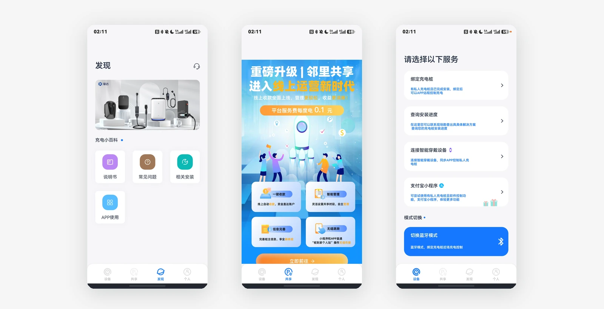
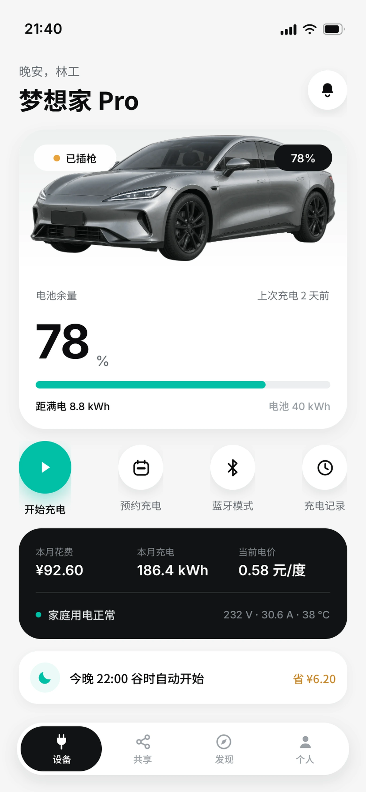
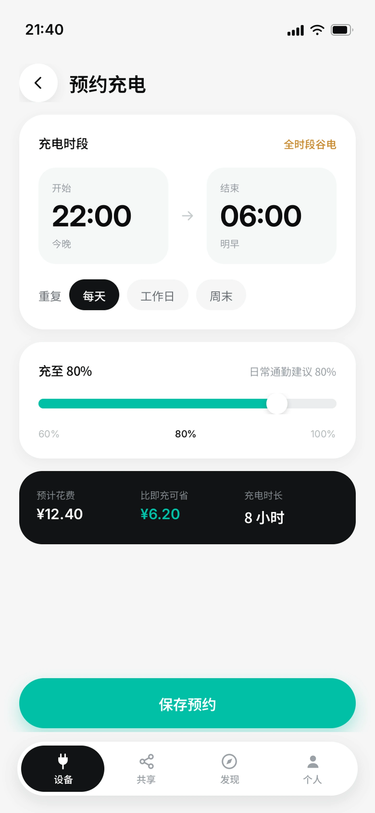
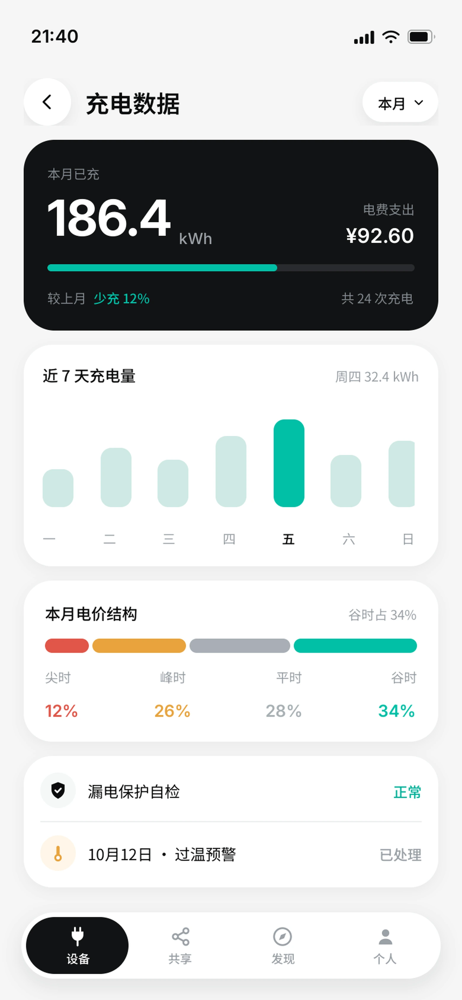
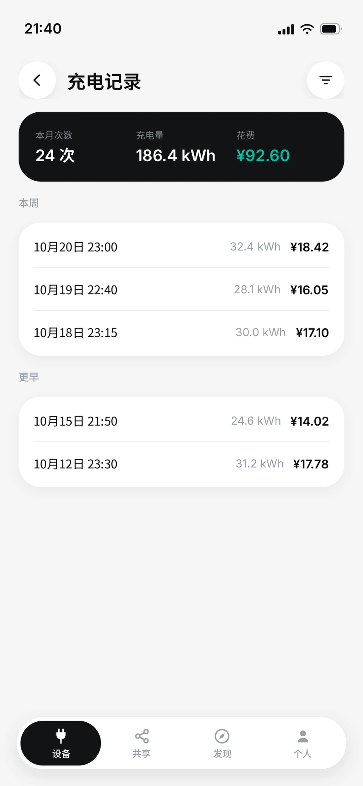
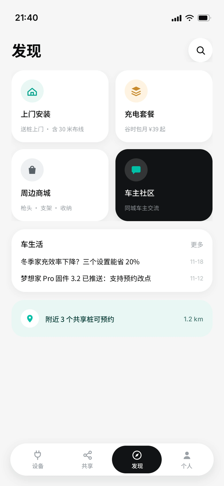
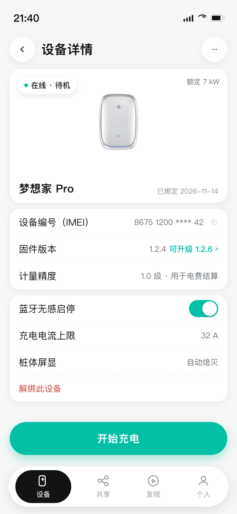
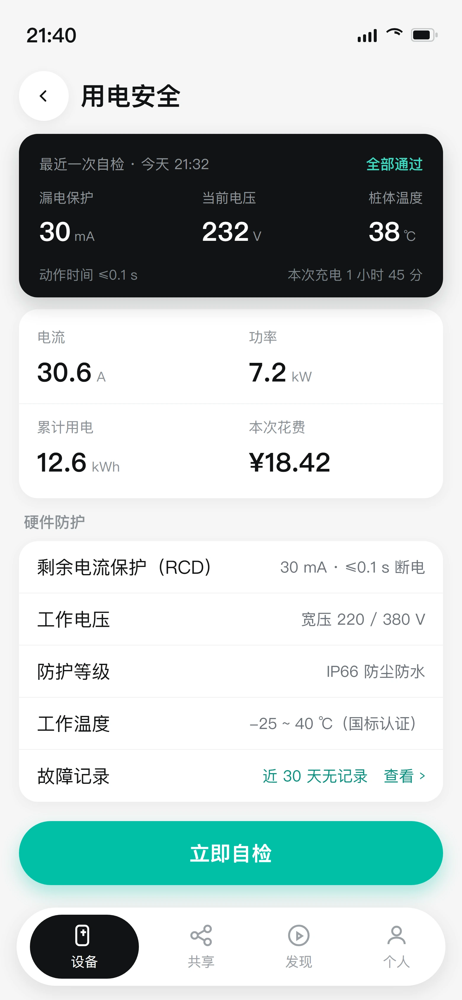
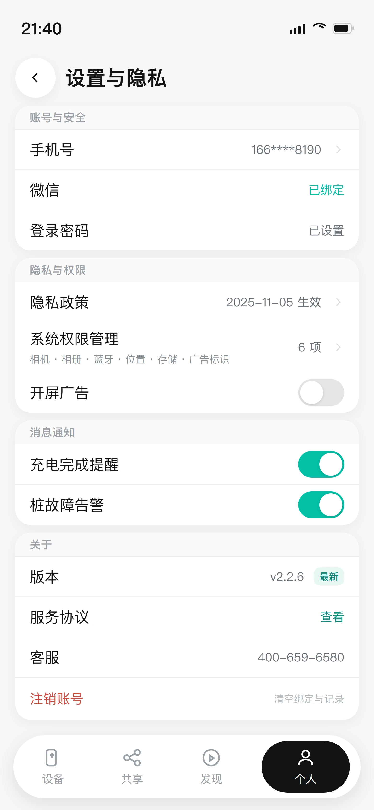

挚达 App 再设计
从接上充电桩到查清用电
家用私桩管理 App 的界面再设计。先把应用商店、招股书、产品手册、隐私政策、安装包与真实评价整理成一套可追溯的证据，再据此重排信息架构与数据口径，并补齐 5 屏缺失链路。

这不是从零开始的产品，先回答它到底长什么样。
挚达是做家用充电桩的公司，App 用来管自家那台桩：启停、预约、共享、看数据。改版前第一件事不是画界面，而是确认现在的界面到底是什么样——因为公开能查到的三套材料，彼此并不一致。
把能公开拿到的东西全部落成文件：应用宝与 App Store 的商店页、港交所招股书里的界面附图、官网 24 页产品手册、隐私政策原文、安装包静态核验，以及 93 条 iOS 真实评价。材料冲突时，以能落到像素和页码的那一份为准。
最终整理了 21 条来源与 142 份归档文件，每条都记了 URL、版本号与抓取日期。后面每一个设计判断，都要能回到其中一条。
先有像素，再有判断。
官方商店图是营销合成图，不能当真实界面用：Android 端五张是深色宣传位，iOS 端五张是浅色卡片，同一款 App 双端呈现相反的视觉。而真机截图显示的是第三种样子——浅色底、青绿主色、蓝色主按钮。
宣传图里的数字自己也对不上：尖峰平谷四项写成 42 + 37 + 18 + 12 = 109%；安装进度四条时间线全部是 2019/1/1 周六 14:15，且「已为您安装完成」与「处理中」并存；充电时长与充电量写成同一个值 23.2。这些痕迹说明它是设计稿拼出来的展示图，不能作为改版基线。
- 港交所招股书 PDF 共 642 页，印刷页码比 PDF 顺序页小 9：常说的「第 234 页」实际是 PDF 第 243 页，界面附图在那里。
- 安装包静态核验（2.2.0 镜像）解出 85 个 Activity 与 57 条界面字符串；两套 Activity 命名并存（view.activity.* 与 .rebuild.view.activity.New*），说明界面被整体重建过。
- 93 条 iOS 评价中 1 星 79 条；2026-08 之后能作为当前版本证据的只有 10 条，其中 6 条在讲「频繁重新登录」。
- 20 项页面清单里，16 项有界面证据，但多数只到入口层级——绑定桩之后的详情、充电中、预约表单仍靠公开素材与安装包推断。

三个落差，决定了改版要动哪里。
不是把界面做漂亮，而是先把「它到底提供什么」和「用户以为它是什么」之间的三处错位摆出来。
问题 / 考量招股书里是设备／统计／发现／个人；当前 Android 真机是设备／共享／发现／个人——统计被降级到个人页内的二级入口。
设计回应按真机结构做，不照抄招股书。统计作为「私桩充电服务 → 数据统计」出现。
问题 / 考量iOS 的「我要共享」是授权亲友使用；Android 的共享 Tab 是邻里共享运营：平台服务费 0.1 元/度、一键收款、直通桩到家个人站。同一个词，两种生意。
设计回应拆成两条线：亲友授权做权限粒度；对外运营只保留开关与状态，不与授权混屏。
问题 / 考量官方文案的四大模块含「防盗充电」与「蓝牙无感」，但安装包字符串 0 命中「防盗」，真机也没有对应页面。
设计回应保留有字符串与手册支撑的蓝牙无感；防盗标注为「未见界面证据」，不凭文案补功能。
两个决定：数据只说自己有的，权限要能拆开。
桩端能给的量只有 kWh、电压、电流、功率、桩体温度与漏电保护动作；车端 SOC 不在挚达的数据链里。所以首页主读数改成电量与金额，SOC 只在标明来源时出现。
- 电价口径统一：首页、预估、结算共用同一个单价（0.58 元/度），不再出现由 8 小时 × 7.2 kW 反推出来的 0.215 元/度。
- 尖峰平谷四项必须加总为 100%：官方宣传图的 109% 不复制，改为 12 / 26 / 28 / 34。
- 亲友权限拆成三项——蓝牙无感启停、手动启停充电、预约充电；三项全关后对方仍可查看状态与记录，但不能启动充电。
- 合规位放在明面上：隐私政策生效日、6 项系统权限、注销入口都写在设置页，不做隐藏折叠。
十屏主链：从插枪到结算，一屏一个任务。
首页先给状态与功率，再给四个高频动作；结算页把金额做成焦点；统计页把尖峰平谷从概念变成能看懂的占比。









原稿从「已绑定」开始，入口和合规位是空的。
十屏覆盖了主链，但缺少绑定、详情、安全内容页、权限粒度与设置。补的五屏按同一套令牌做：同一背景、同一卡片圆角、同一字号层级。
- 添加设备：扫码为主视觉、蓝牙设备列表为次入口，文案沿用安装包里「请选择蓝牙设备绑定」与「同一台桩只能绑定一个主账号」的原意。
- 设备详情：一屏说清这台桩能改什么——蓝牙无感、电流上限、桩体屏显、固件版本与解绑。
- 用电安全：数值以桩端计量为准，30 mA / ≤0.1 s 取自产品手册原文；措辞用说明书里的「剩余电流保护（RCD）」。
- 成员权限：把「随时可用」拆成三项独立开关，并写明全关后的边界。
- 设置与隐私：6 项系统权限、隐私政策生效日、注销入口、开屏广告开关，全部按政策原文对齐。





把自己画错的地方也列出来。
改版稿第一次做完后，逐屏对回原始资料，发现六处与真实产品冲突。这几条不改，答辩时一问就露。
问题 / 考量私桩共享写成 ¥0.60/度
设计回应真机运营页写明平台服务费 0.1 元/度，已统一为 0.1
问题 / 考量78%、充至 80%、距满电 8.8 kWh、78%→100%
设计回应挚达只有桩端计量，无车端 SOC 字段；改为 kWh 口径或标注来源
问题 / 考量¥12.40 / 8 小时 / 7.2 kW，反推 0.215 元/度
设计回应与首页 0.58 元/度冲突；改为目标电量 × 谷电价
问题 / 考量充电套餐 / 周边商城 / 车主社区
设计回应真实发现页是说明书 / 常见问题 / 相关安装 / APP 使用
问题 / 考量删掉了共享收益 / 绿色能量 / 商品订单 / 桩到家区块
设计回应真实个人页有这些区块，改版应保留并重排，而不是删除
问题 / 考量只写「随时可用」一个状态
设计回应官方权限是蓝牙无感、启停、预约三项，需拆开
做完的是界面，没做的是验证。
- 已完成：21 条来源与 142 份归档、20 项页面清单与信息架构、15 屏静态界面、6 处事实冲突核对表。
- 待验证：真实车主如何理解「共享」这个词（授权还是运营）、kWh 口径能否替代 SOC 心智、亲友预约与主账号预约的互斥规则。
- 未开展：真机全流程测试、真实车主访谈、可用性测试；没有充电桩，因此不产出任何「充电中」的真实运行截图。
- 仍缺 6 项页面：登录、注册与首次设置、即插即充、防盗充电、蓝牙离线、安装进度。
 维序 WEISU · 让每一次拣货差异，都有据可查、有人负责、有路可走。
维序 WEISU · 让每一次拣货差异，都有据可查、有人负责、有路可走。 智审 · 让合同审查有据可查。
智审 · 让合同审查有据可查。